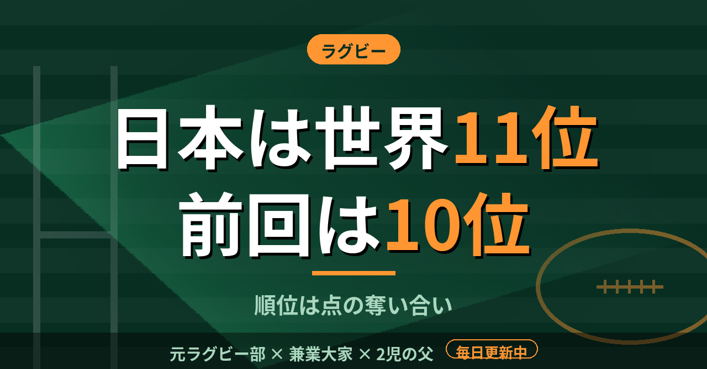

ラグビー世界ランク日本は11位、前回の10位から1つ下がった。仕組みを元選手が読んだ
大学では、ランキングの順位を気にしたことがなかった。4年でベスト16まで進んだときも、順位は結果の後からついてくるものだと思っていた。11月のワールドラグビーの世界ランキングで、日本は11位だった。前回の10位から1つ下がり、10位にはフィジー、12位にはイタリアが並ぶ。順位がなぜそう動くのかを、公式の解説ページで読んだ。
世界ランク11位、前回は10位だった
公開されている11月版は、11月1日までの国際試合をもとに計算されている。1位南アフリカ、2位ニュージーランド、3位フランス、4位アイルランド、5位スコットランド、6位イングランド、7位オーストラリア、8位アルゼンチン、9位ウェールズ、10位フィジー、11位日本、12位イタリアという並びだ。10位から12位に並ぶのは、フィジー、日本、イタリアの3チームで、日本の1つ下がりはすぐ隣の順位の話である。
日本は10位から11位に下がった。ただ、順位表を見ただけでは、日本が負けて下がったのか、周りが上がって抜かれたのかは分からない。この違いは、仕組みを読まないと見えない。僕は順位を、強さの序列だと受け取ってきた。実際は、国際試合の結果を点に直して積み重ねた記録に近い。
ランキングは点の奪い合いで決まる
公式の解説ページによると、男子も女子もポイント交換方式で、勝ったチームが得た点は、負けたチームが失う。全体の合計は常にゼロになる。ある国が上がれば、どこかの国が同じ分だけ下がるということだ。
交換する点の量は、試合の結果と、両チームの実力差と、得失点差で決まる。ホームのチームはレーティングに3ポイントを足して扱われ、勝っても得る点は少なく、負けると失う点は多い。15点を超えて勝つと交換量は1.5倍になり、ワールドカップの試合は2倍になる。ただし、このページは2014年の内容をもとにしていて、今の規則とは違う可能性があると書かれている。細かい数値は、最新の公式情報で確かめたい。ホームの3ポイントという値は小さく見える。ただ、国体で慣れない会場に立った経験のある身としては、その差を無視する気にはなれない。
同じ1勝でも、点は倍以上違う
読んで気づいたのは、強い相手に勝つほど点が大きく動くことだ。解説ページの例では、レーティング差が3.56のとき、優位な側が勝つと0.64ポイント、劣位な側が勝つと1.36ポイントが動く。同じ1勝でも、倍以上違う。順位の動きは、勝ち負けの数より、相手の格で決まる部分が大きい。
高3で大阪7人制大会に優勝したとき、順位の点数など誰も計算していなかった。勝てば全部だと思っていた。国際試合は違う。誰に、どこで、何点差で勝つかまで含めて数えられている。日本が下がった1つの順位の裏には、そういう計算がある。
11位という数字は、結果の一部でしかない。次に日本の試合を見るときは、相手のレーティングと会場も一緒に見る。
この記事は note にも掲載しています。